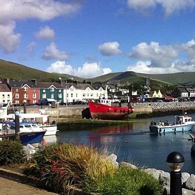
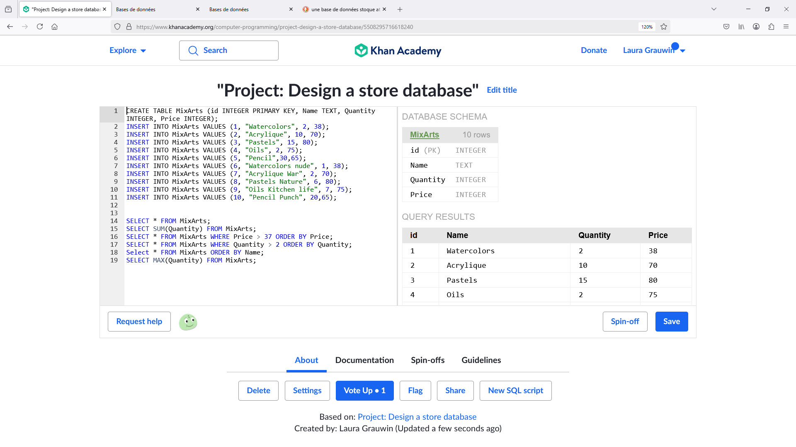
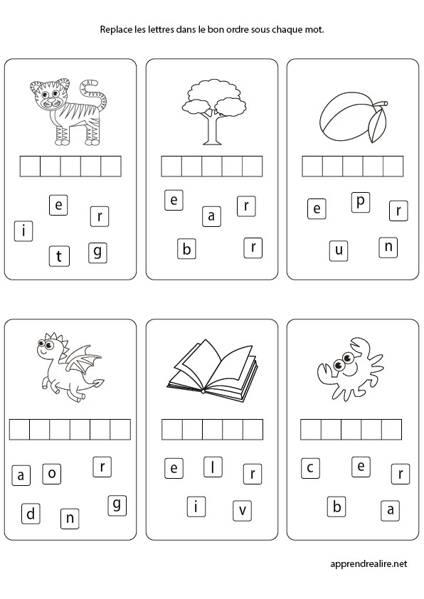
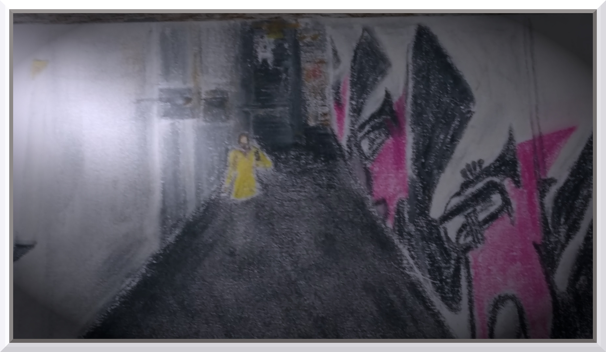

HTML CSS javascript


.png)



Ces projets ont été réalisés avec les formations de Khan Academy, W3school et le CNAM. J'ai aussi... réalisé quelques bases de données sql dont vous trouverez quelques exemples sur le bas de cette page. Vous trouverez plus d'informations sur moi en cliquant ici.
Pour réaliser cette première ...page web j'ai utilisé HTML et CSS. Ce qui m'a plu c'est la possibilité d'appliquer de nombreux styles avec css et de créer des liens internes et externes.
Cette page html est ludique et simple. L'utilisateur... doit cliquer sur le chat afin que ce dernier puisse récupérer sa moustache. Dans ce projet j'ai utilisé les propriétés de DOM afin que l'utilisateur puisse déplacer la moustache jusqu'à ce qu'il parvienne à la placer au bon endroit. Ma fonction onCatClick () contient 4 éléménts: 2 propriétés d'un "DOM event" et 2 coordonnées X et Y. Les deux évenements DOM et Les 2 coordonnées X et Y vont permettre d'une part d'intégrer des éléments HTML comme variables dans ma fonction onClick() contenue dans Javascript et d'autre part de rendre le click de l'utilisateur interactif. L'"event listener" permet de rappeler ma fonction onCatClick () à chaque nouveau click de l'utilisateur.
Pour réaliser cette animation j'ai utilisé... HTML, CSS, DOM "animation" et javascript: Cet exemple de code montre que l'animation du chat est définie par une fonction. Pour indiquer toute modification dans la fonction au navigateur il faut utiliser "Window requestAnimationFrame". Le sens de la marche du chat est un exemple de fonctionnement de l'animation. Si je veux également minuter sa marche j'utilise la méthode "window.requestAnimationFrame" pour indiquer ce changement au navigateur. Le navigateur prendra en compte cette modification avant son actualisation. Cette méthode fait fonctionner l'animation en continu à chaque fois que la fonction (walkTheCat) est appellée.
Jquery est une "librairie" de fonctions JavaScript que ... j'ai utilisée dans cet exercice pour remplacer tous les mots
"Caterpillars" par les mots "Butterflies": JQuery text() est utilisé pour modifier par exemple un texte.
Après avoir modifié les titres, j'ai remplacé "caterpillars" par "butterflies" dans les paragraphes et changé d'image
Enfin J'ai changé la couleur du titre:
$("h1").text("Butterflies");
jquery m'a permis d'effectuer des changements dans mon texte en un temps limité. Bien qu'il s'agissait d'un texte court,
cet exercice a montré tout l'intêret que JQuery vaut à être utilisé pour modifier de plus grands contenus html.
$("p").html("Butterflies can have vivid colors");
$("img").attr("src",'https://www.kasandbox.org/
programming-images/animals/butterfly_monarch.png')
$("h1").css("color","green")
Pour développer ce quizz j'ai d'abord créé un formulaire puis ... j'ai utilisé un "event lstener" de DOM.
Le code suivant montre que l"event listener" va générer un évenement à chaque fois que l'utilisateur cliquera sur le bouton "answer".
Dans ce jeu l'évenement généré dépendra du choix séléctionné par l'utilisateur.
Un navigateur par défaut envoie les formulaires sur un serveur afin de sauvegarder les données.
$("#quiz-form").on("submit",)
Ce code est utilisé pour que javascript intercepte les données recueillies et permette à l'utilisateur
de rester sur la page. Le variable $answer store la collection Jquery de toutes les réponses que l'utilisateur peut choisir.
"eventpreventDefaultvar $answer = $("#trivia-answer");
J'ai ajouté dans mon code des conditions afin que l'utilisateur puisse savoir si sa réponse est correcte:
var answer = $answer.val(); if (answer ==="resig"){
$("#result").text("You did it!")
} else{
$("#result").text("Try again!")
}
J'ai construit ce jeu sur sur la base d'un questionnaire html. Celui-ci est ... ludique et pédagogique. Il n'a que 3 catégories
contenant un nombre de mots restreint mais les possibilités sont infinies, avec Html, Css et Javascript.
Javascript et Jquery m'ont permis de rendre ce jeu interactif:
$("#game").hover(
function() { $("#img").show(1000); },
function() { $("#img").hide(1000); }
);
Pendant ma formation j'ai réalisé quelques bases de données SQL. Vous pourrez voir... quelques exemples en cliquant sur le lien dans la colonne de droite. sql_1: Dans cet exemple j'ai crée une base de données pour un magasin fictif et inséré des valeurs avec "CREATE TABLE", "INSERT" and "VALUES"; J'ai aussi utilisé "SELECT", "FROM", "WHERE" et "ORDER BY" pour lancer des requêtes et selectionner par commande ou par client par exemple. sql_2: Cette base de données contient un ensemble de données concernant une liste d'étudiants et leurs moyenne. J'ai ajouté aux requêtes habituelles des conditions en utilisant "CASE" puis "WHEN", "THEN", "ELSE". sql_3: Le schéma de cette base de données relationnelle contient une liste de client(e)s avec leurs IDs, noms et emails et une deuxième liste avec les IDs des commandes et des client(e)s, l'objet commandé et son prix. Dans cet exercice j'ai lancé une requête pour avoir la liste de chaque client(e) avec son nom associé à son email et à l'objet commandé et associé son prix. En plus des requêtes normales j'ai donc utilisé LEFT OUTER JOIN pour joindre la liste des clients avec la liste de leurs commandes, incluant aussi les client(e)s n'ayant pas passé de commandes. J'ai lancé ensuite une autre requête et j'ai ajouté ORDER BY pour placer chaque client(e) dans le tableau selon le montant dépensé: Dans ce cas ci, ORDER BY total_money_spent desc, le desc indique un ordre descendant. sql_4: Dans cet exercice j'ai modifié une rangée déjà créée en utilisant ALTER TABLE, SET, ADD, FROM et UPDATE ou DELETE.
Ce blog est dédié aux... adultes débutants C'est une page pédagogique avec des jeux et des exercices réalisée avec html, css, JS et Flask. En cours de construction.
Cliquez sur ce lien pour accéder à mon cv Depuis 2023 j'ai développé et... acquis des compétences en langages de programmation avec lesquels j'ai pu créer ce site: HTML5, css3, JavaScript et Jquéry. J'ai réalisé pendant cette formation de nombreux projets dont vous trouverez les liens plus haut sur cette page. J'ai aussi abordé les langages c et Python en suivant le mooc cs50 "Introduction to computer science" de Harvard. En dehors de la programmation j'aime utiliser le logiciel de manipulation d'images Gimp pour des projets créatifs, comme par exemple réaliser des affiches à partir de dessins numérisés. Vous troverez sur l'en-tête de cette page un de mes dessins modifié avec cet outil: Eclairage ajouté et style "photo analogique" appliqué au niveau des bordures. Je compte mettre en pratique mes compétences dans la réalisation de projets pédagogiques tel que l'apprentissage de la langue française (FLE ou remise à niveau). En cliquant sur ce lien Blog vous serez dirigé vers une page consacrée à ce sujet.


